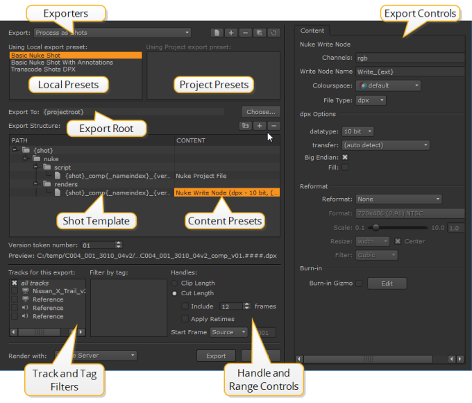

核武器工作室 使用预设和快照模板执行导出操作，包括往返和 EDL/XML 创建。的 出口 对话框控制导出的内容和位置，以及是否期望版本控制剪辑作为从 Nuke 往返的一部分。
的 出口 从访问对话框 文件 菜单，从右键单击 bin 和 timeline 菜单，或使用键盘快捷键 Ctrl / Cmd 转变 E .
快照模板也用于创建在
创建 Comp
,从传递剪辑实例

核武器工作室 用途 内容预设 在所有快照模板中，允许您创建常用的导出条件，然后在所有项目中可用。一些预设只适用于某些出口商，例如 EDL 出口商 预设不能与一起使用 作为镜头处理 出口。
可以过滤出口用 此出口的轨迹 和 按标签过滤 列表，仅导出用特定标记标记的某些轨迹或剪辑实例。请参阅 使用标签 欲了解更多信息。
为了您的方便, 核武器工作室 带有许多现成的船只 内容预设 ,但您可以根据需要编辑这些:
• 转码图像 -定义转码参数，允许您保存最常用的文件类型转换。
• Nuke 项目文件 -定义 Nuke 在往返过程中读写节点使用的脚本名称和路径 创建 Comp .
• 核写入节点 -定义 Nuke 写入节点的渲染格式。添加多个 Nuke 写入节点预设，以在生成的 Nuke 脚本中创建多个写入节点。
• Nuke 注释文件 -定义 Nuke 写节点和 Precomp 组在往返或 创建 Comp .
• 渲染 与 -选择如何 核武器工作室 呈现您的导出: 单一渲染过程 或 帧服务器 。此下拉列表默认为 帧服务器 使用中指定的从属进程数 偏好 > 性能 > 线程/进程 。如果将此首选项设置为 0 , 核武器工作室 依赖外部机器设置为渲染奴隶。请参阅 在外部机器上使用帧服务器 欲了解更多信息。
• EDL 出口商 -用于将序列导出为 EDL 格式。
• 符号链接导出器 -创建指向源文件位置的符号链接，而不是复制。
• XML 导出器 -用于将序列导出为 XML 格式。
• 复制导出器 -创建源文件到指定位置的副本，而不是符号链接。
• 音频导出 -将任何音轨复制到 。Wav 指定位置的文件。
|
|